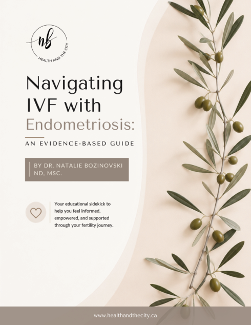

IVF success and endometriosis
Understand how success rates are reported, how disease stage may affect outcomes and why research describes populations rather than individuals.
An educational sidekick designed to help you feel informed, empowered and supported throughout your fertility journey.

Dr. Natalie’s 61-page guide connects research, treatment decisions and practical preparation without presenting population statistics as a prediction for one person.
Understand how success rates are reported, how disease stage may affect outcomes and why research describes populations rather than individuals.
Review expectant management, ovulation induction, IUI, IVF, surgery and fertility preservation considerations.
Follow the journey from baseline assessment and ovarian stimulation through retrieval, embryo development, transfer and the two-week wait.
Explore the evidence around inflammation, the gut microbiome, hormones, nutrition and complementary care.
Bring the sections that matter most to your next appointment. Mark the questions you want answered and use them to understand how your diagnosis, history, ovarian reserve and treatment goals shaped the recommended plan.
This educational resource does not diagnose a condition, predict an individual outcome or replace advice from your fertility or medical team.
This product is not currently available for purchase.
Explore the ShopA focused consultation can help connect the guide to your history, current treatment plan and priorities.
Book a consultation